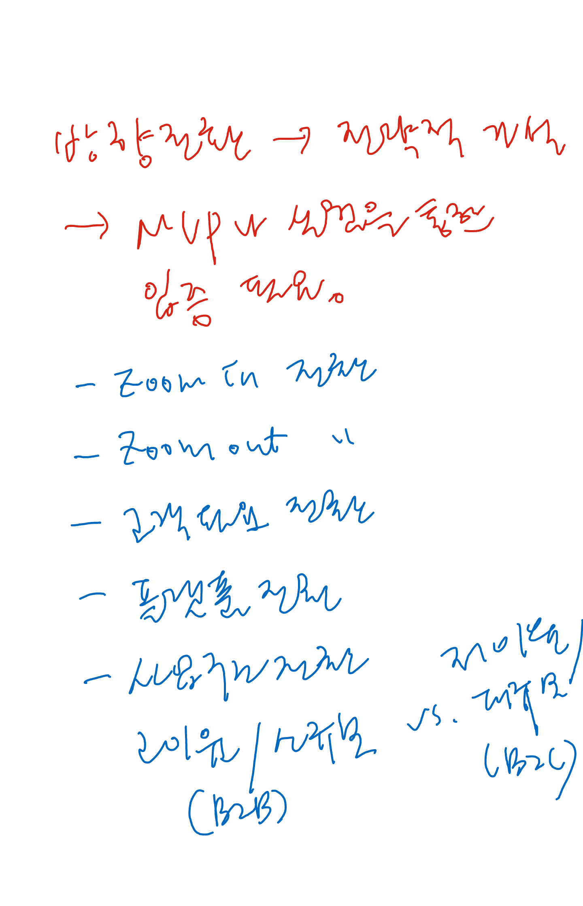
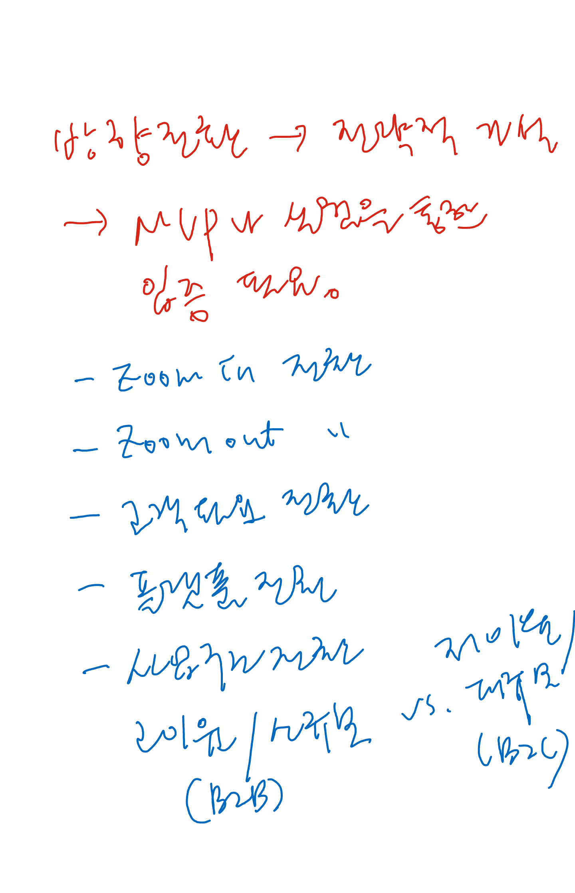

린 스타트업, 에릭 리스 저. ATTACH



Book Readings
Problem solver 보다 problem finder가 더 필요한 시점이다. 주어진 문제를 해결하는 것은 정보기술의 도움으로 전 보다 쉬워졌다. 문제가 무엇이고 제약사항이 무엇인 찾고 또 찾는 것, 만질 수 있도록 실험하고 실패하고 배우는 것이 중요.
불확실성을 인정하고 작은 실험을 통하여 창조적인 사고, 아이디어, 방향을 찾는 것. 현재의 기술변화, 시장변화, 소비자 취향변화 속에서 실패에 대한 리스크를 줄이기 위하여 정형화된 프로세스 계속 강조 한다면 GM과 같은 상황에 처해 질 수 있다.
솔루션이란 작은 실험을 통하여 우리가 하고자 하는 제품 및 서비스가 고객에게 충분한 가치를 제공함을 검증하는 과정을 통하여 확보된다. 성장가능한 솔루션을 발굴하여 관련 제품, 서비스를 안정적으로 공급할 수 있게 만들어야 확대 가능하다.

사내의 경우 당신보다 직급이 낮은 사람들과의 회의라면 권한을 위임하자. 당신이 참석 할 때는 의사 결정만 해서 회의 시간을 단축한다. 그리고 남는 시간을 이용해 상사들이 모이는 회의에 참석하자. 부하직원을 데리고 술 마시러 가지 말고, 부하직원들을 일찍 귀가시커 그들끼리 술 마시러 갈 기회를 만들어주자. 강한 유대를 맺는 상대의 수준을 끌어올리는 것은 당신에게 성장의 계기도 된다.당신이 보유한 인적자본의 가치는?
비발디, 바흐, 핸델, 하이든, 모짜르트, 베토벤, 벨라리오즈, 멘델스존, 슈만, 쇼팽, 바그너, 주세페 베르디 라트라비아타, 푸치니 나비부인
니콜로 파가니니, 바이얼리니스트